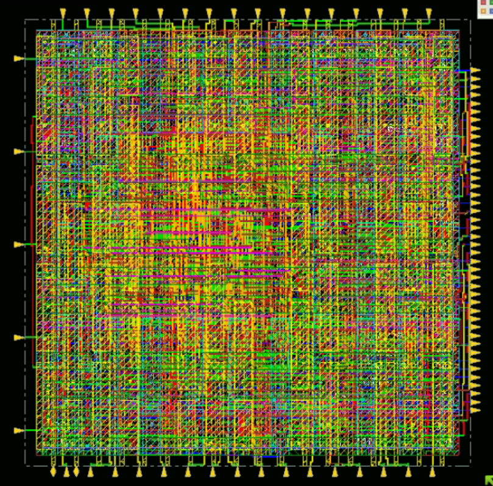
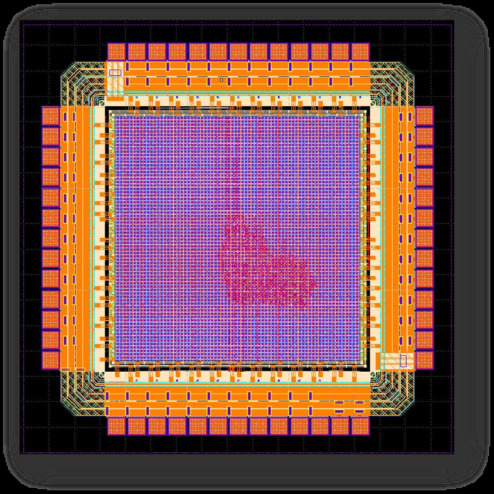
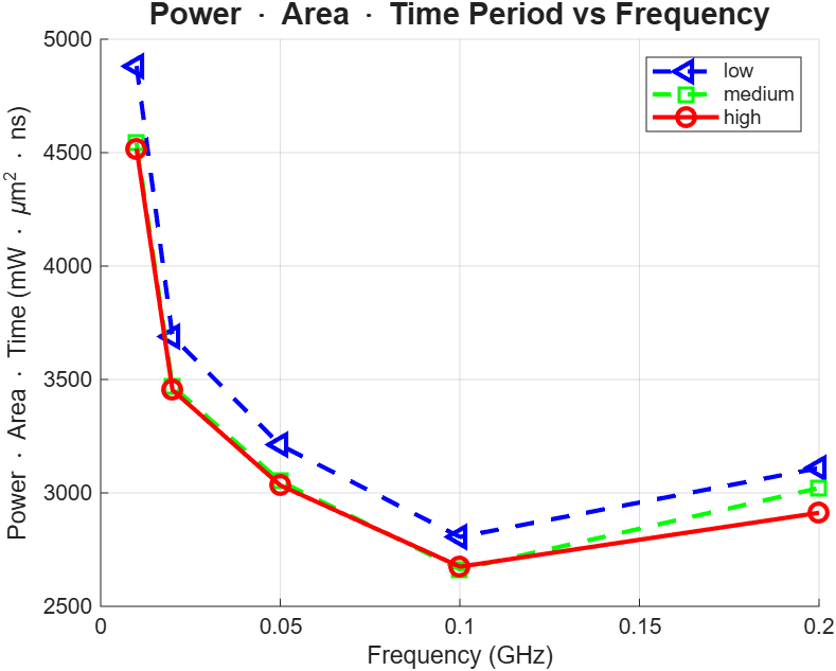
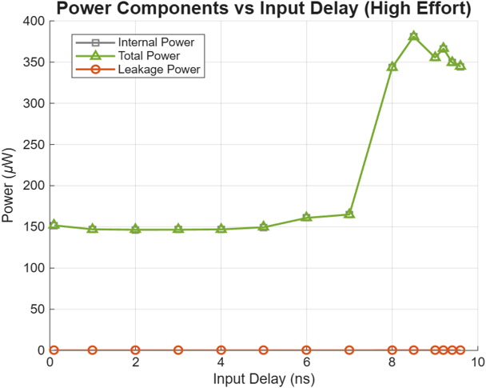
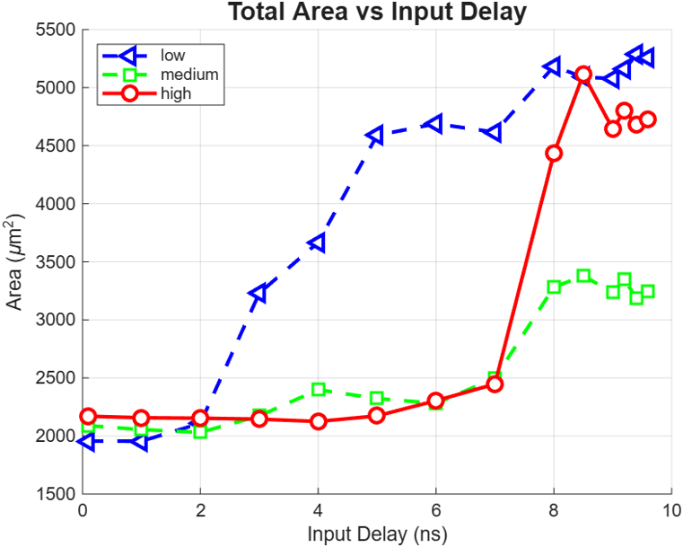

RTL-to-GDSII · 2026
Cadence GPDK045 (45 nm) and OpenROAD IHP SG13G2 (130 nm) cross-toolchain validation
A parameterized 16-bit multiply-accumulate unit taken from SystemVerilog through synthesis, place-and-route and DRC-clean layout in Cadence GPDK045, then re-implemented independently in OpenROAD on IHP SG13G2.





| Metric | Cadence (45 nm) | OpenROAD (130 nm) |
|---|---|---|
| Mapped cells | 778 | 1,847 |
| Core utilisation | 94.547% | 73.2% |
| Clock insertion delay | 1.5 ns | 1.2 ns |
| Clock skew | 20 ps | 45 ps |
| DRC violations | 0 | 0 |
| Runtime, RTL to GDS | ~1.5 hr | ~45 min |
Sequential tuning worked here, likely because the design is small; a joint sweep is future work. Coverage at 100% means every defined bin was hit, not that the design is exhaustively verified. The two flows use different processes, libraries and placement densities, so cell counts and utilisation are not a measure of relative tool quality. Only the nominal PVT corner was studied.